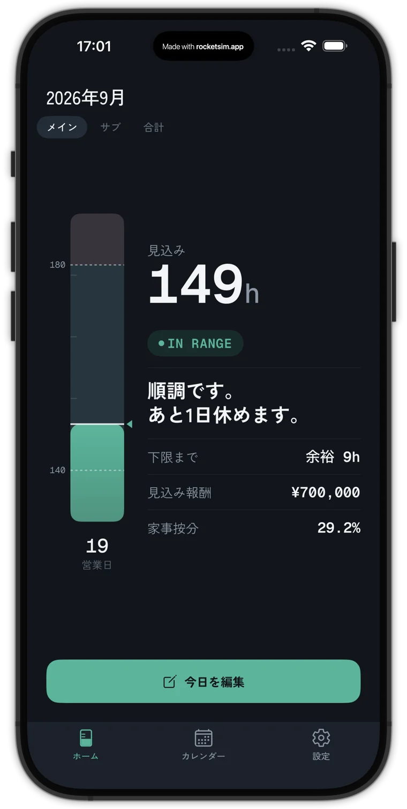
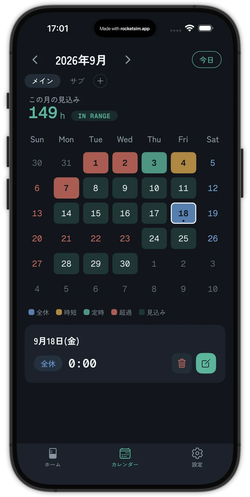
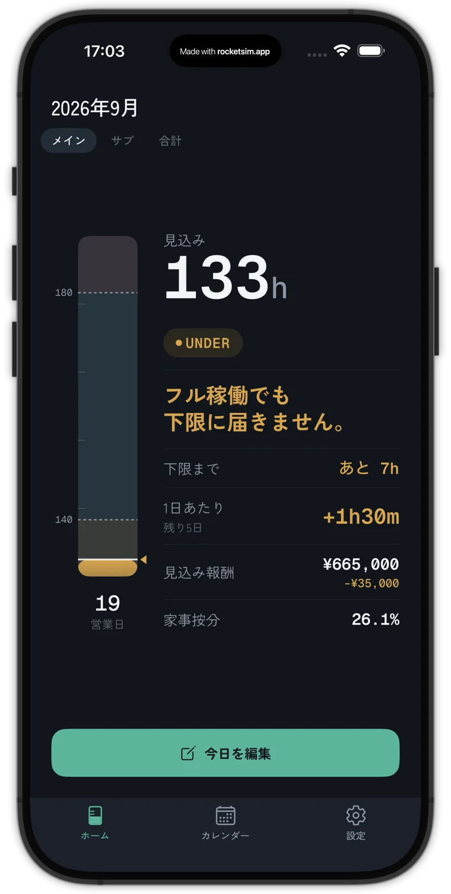
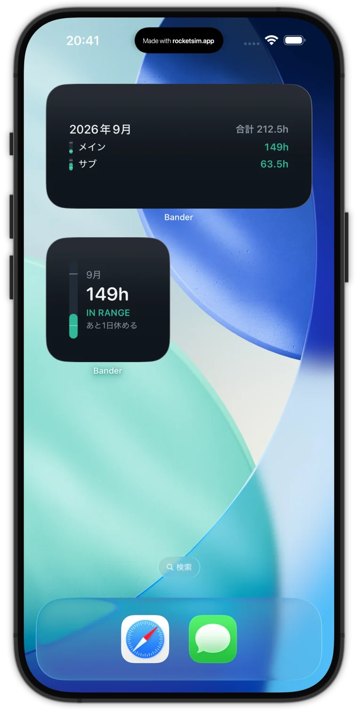

毎月、同じ計算を手でやっている。
精算幅の契約では、月の稼働が下限を割ると報酬が控除され、上限を超えると超過分の扱いが変わります。だから毎月、気になる。でも勤怠表を見ても、月の途中で「このまま行くと何時間になるか」は書いてありません。
- 月末が近づくと、カレンダーで残りの営業日を数え直す今日は入れるのか、入れないのか。数えるたびに1日ずれる。
- 足りない時間を日数で割って、1日の残業を決める1分単位なら割り算で済む。でも15分・30分で精算する現場では、その残業がそのまま数えられるとは限らない。
- 有給を取りたいのに、すぐには決められない下限を割らないか、確かめてからでないと言い出せない。
- 残業が続いた月は、上限を超えないか気になるあと何時間まで働いていいのか、勤怠表とにらめっこ。
たとえば、9月15日に計算すると。
下限140h・上限180h・定時8hの現場で、ここまでの実績は71h。このままだと下限を割りそうなので、残りの営業日を数えて、1日あたりの残業を出してみます。
- 実績 71h ＋ 残り 8日 × 8h135h
- 下限 140h まであと 5h
- 5h ÷ 8日37.5分
1分単位で考えると、1日あたりの残業は38分
でも、この「毎日38分」には、落とし穴が2つあります。
営業日を1日多く数えると
5h ÷ 9日で、1日34分。でも実際に働けるのは8日なので、足せるのは4h32mだけ。
月末の稼働139h32m
あと28分のところで、下限を割ります。
15分・30分で精算する現場だと
毎日38分残業しても、数えられるのは精算単位で切り捨てたところまで。白い線が、下限に必要な37.5分です。
下限を割らないのは、15分精算なら毎日45分、30分精算なら毎日1h。精算単位まで切り上げて残業する必要があります。
1日ごとの稼働を、精算単位で切り捨てて数える場合の例です。
残りの営業日も、月末の見込みも、精算単位で切り上げた1日あたりの残業も、Bander が毎日計算しておきます。
数えなくても、帯を見れば分かる。
契約の精算幅を、下限から上限までの1本の帯にしました。記録のない営業日は定時で働くものとして見込むので、今月がどこに着地しそうかが、いつ開いても分かります。日本の祝日は自動で除きます。
何時間超えそうかと、1日あたりどれだけ減らせば上限に収まるかを出します。
下限までの余裕と、あと何日休めるかを出します。休みを入れる前に、開いて確かめるだけ。
1日あたり何時間足せば下限に戻るかを、精算単位で切り上げて出します。来月がフル稼働でも下限を割る見込みなら、通知で先に知らせます。
ページの上の画面で、休む日と残業を変えて試せます。
入れるのは、いつもと違う日だけ。




- 現場を登録する契約の精算幅（下限・上限）と、定時の時間を入れます。
- いつもと違う日だけ記録する休んだ日・時短の日・残業した日だけ。毎日つける必要はありません。
- 帯とウィジェットで確かめる今月の着地と、あと何日休めるか。下限を割りそうなら、1日あたり何時間足せばいいかが出ます。
料金
帯の可視化は、これからも無料です。
「いくらになるか」と「掛け持ち」を扱いたくなったら、Bander Pro を。月額ではなく、一度の購入で使えます。
- 帯ゲージ（下限〜上限のどこにいるか）
- 月末の見込みと、あと休める日数
- カレンダーでの記録
- 来月の下限リスクの通知
- ホーム画面のウィジェット
- 家事按分当月の按分率
- 現場の登録1件まで
- 無料の機能すべて
- 見込み報酬の表示単価から今月の報酬を計算。下限割れの控除額・上限超過分も
- パラレルワーク複数の現場を登録し、稼働を合算
- 家事按分の年間集計全現場の合算。確定申告の根拠に
- 現場の登録無制限
購入はアプリ内から。Apple ID で購入を復元できます。
稼働の記録は、端末の中だけ。
よくある質問
毎日記録しないといけませんか？
いいえ。記録のない営業日は定時で働いたものとして見込みます。入れるのは、休んだ日・時短の日・残業した日だけです。
祝日はどう扱いますか？
日本の祝日を自動で除いて、営業日を数えます。
精算単位（15分・30分）に合わせられますか？
現場ごとに1分・15分・30分から選べます。1日あたりの残業（調整時間）は、その単位で切り上げて出します。
無料でどこまで使えますか？
帯ゲージ、月末の見込みとあと休める日数、カレンダー、通知、ウィジェットは無料です。見込み報酬の金額表示、複数現場の合算、家事按分の年間集計は Bander Pro（¥1,000・買い切り）で使えます。
現場を掛け持ちしていても使えますか？
Bander Pro で複数の現場を登録できます。現場ごとの帯と、合計の稼働を見られます。
データはどこに保存されますか？
お使いの iPhone の中だけです。稼働の記録を外部へ送ることはありません。Bander Pro を購入するときだけ、Apple と課金の仕組みに購入の情報が送られます。詳しくはプライバシーポリシーをご覧ください。
Android でも使えますか？
現在は iPhone 版のみです。